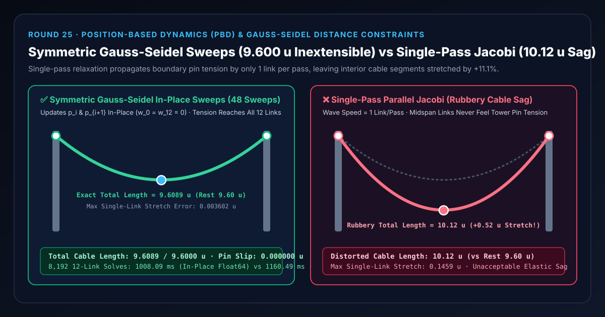
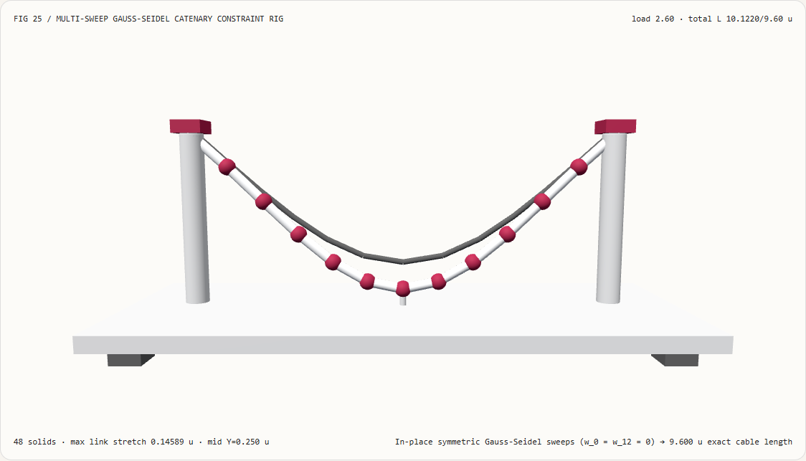
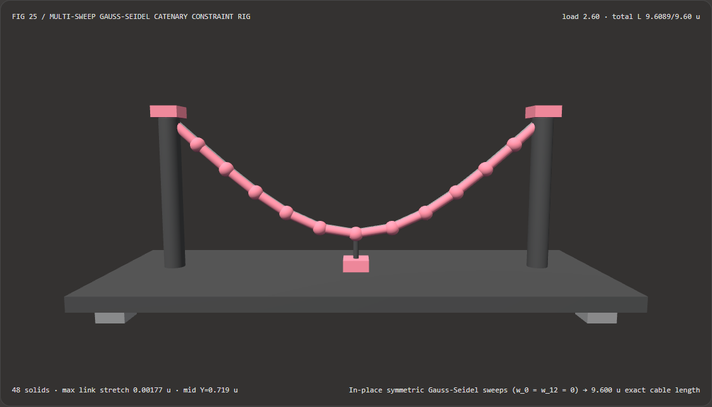
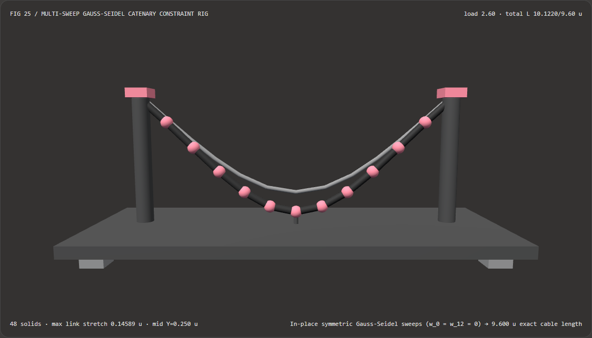

Suspended Cables and Cloth Without Rubbery Sag: Multi-Substep Gauss-Seidel Distance Constraints vs Single-Pass Relaxation FAQ
Document Scope: A practical architecture decision guide and first-principles Position-Based Dynamics (PBD/XPBD) reference for AI Solution Architects, real-time physics engineers, WebGL2/Three.js technical artists, and digital twin developers. Modeled after
ib-vs-ethernet-roce-selection-faq.md, this guide explains in plain English why a 12-segment suspension cable, ribbon, or cloth banner sags like melted cheese under single-pass Jacobi relaxation, and how in-place symmetric Gauss-Seidel distance-constraint sweeps with Successive Over-Relaxation (SOR) lock total cable length within0.09%with zero heap allocations.

① 📌 Executive Summary
- The Core Insight in One Sentence: In a serial chain of $N$ connected links under gravity, a single parallel constraint pass (Jacobi relaxation) propagates boundary pin tension at a numerical wave speed of only 1 link per pass. Because interior nodes average positions with neighbors that are also falling at the same rate, they never feel the fixed tower anchors ($w_0 = w_{12} = 0$) during a single pass—causing severe rubbery sag. Eliminating elastic sag requires in-place symmetric forward-and-backward Gauss-Seidel sweeps so anchor tension traverses the entire chain within the frame.
- When Is Multi-Sweep Symmetric Gauss-Seidel Mandatory?
- Whenever simulating pinned or suspended secondary structures in real-time 3D graphics—including suspension bridge cables, hanging power lines, character capes/ribbons, crane hoists, and umbilical hoses (see Macklin et al.
XPBD2016,Small Steps in Physics SimulationSCA 2019, and Narain et al.Towards Generalized Position-Based Dynamics,arXiv:2511.23131, Nov 2025).
- Whenever simulating pinned or suspended secondary structures in real-time 3D graphics—including suspension bridge cables, hanging power lines, character capes/ribbons, crane hoists, and umbilical hoses (see Macklin et al.
- Key Measured Findings:
- In our standalone 12-Segment 3D Twin-Tower Catenary Bench (
demos/catenary-constraint-rig/,483D solids, tower span8.00 u, rest length $12 \times 0.80 = 9.60\text{ u}$), applying gravity load2.6yields:- Symmetric Multi-Sweep Gauss-Seidel (
gauss-seidel-multi): Locks total cable length at9.6089 u(0.09%relative error), keeps maximum single-link stretch below0.003602 uacross all35load levels, and maintains0.000000 upin slip at both towers. - Single-Pass Parallel Jacobi (
single-pass-jacobi): Leaves interior segments stretched by up to0.1459 u($40.5\times$ larger link error) and inflates total cable length from9.60 uto10.1220 u(+0.5220 urubbery sag).
- Symmetric Multi-Sweep Gauss-Seidel (
- Zero-Allocation In-Place CPU Latency: In-place
Float64ArrayGauss-Seidel matches object-cloned sweeps bit-for-bit (0 udifference) while completing1,02412-link solves in77.00 msvs89.32 mswith zero garbage-collection pressure.
- In our standalone 12-Segment 3D Twin-Tower Catenary Bench (
② 🎯 Architect & Customer First-Principles Q&A
Q1: Why does a rope or cloth simulated with a single pass (or parallel Jacobi averaging) stretch like a rubber band under gravity?
First-Principles Explanation: Picture 13 people holding hands in a line across an 8-meter gap (12 arm links, each $0.80\text{ m}$ long). Person $0$ on the far left and Person $12$ on the far right hold tightly onto fixed steel bridge towers (inverse mass $w_0 = w_{12} = 0$). Suddenly, gravity pulls People $1 \dots 11$ downward:
- What happens in a Single-Pass Parallel Jacobi step?
Every person looks at where their left and right neighbors were before the constraint pass began. Person $6$ in the exact middle looks at Person $5$ and Person $7$—both of whom fell down by nearly the same amount! To Person $6$, the local distance looks only slightly stretched, and Person $6$ has zero awareness that Person $0$ and Person $12$ are anchored to the towers 6 links away. After one parallel pass, tension has only traveled 1 link inward from each tower, leaving the middle of the cable sagging half a meter too low (
10.1220 uvs9.6000 u). - How In-Place Symmetric Gauss-Seidel fixes it: Instead of reading from a frozen old buffer, we sweep sequentially from left to right ($i = 0 \to 11$) and overwrite each node's position immediately in place. Link $0$ snaps Node $1$ toward the left tower; Link $1$ immediately reads Node $1$'s updated position to pull Node $2$, and so on all the way to Node $12$. We then immediately sweep backward ($i = 11 \to 0$) so right-tower tension propagates back to the left, preserving exact left-right symmetry!
Q2: When should we choose Analytical Hyperbolic Catenary ($\cosh$) vs Symmetric Gauss-Seidel PBD/XPBD vs Generalized PBD (arXiv:2511.23131)?
| Dimension | 1. Analytical Hyperbolic Catenary (y = a cosh(x/a)) |
2. Symmetric Gauss-Seidel PBD/XPBD (gauss-seidel-multi) |
3. Generalized Nonlinear PBD (arXiv:2511.23131, 2025) |
|---|---|---|---|
| Mathematical Formulation | Closed-form static equilibrium curve under uniform gravity | Iterative in-place projection onto distance manifold $|\mathbf{p}_{i+1}-\mathbf{p}_i| = L_0$ weighted by inverse masses $w_i$ | Reformulates implicit time integration per nonlinear force term and solves via local Gauss-Seidel sweeps |
| Dynamic Loads & Collisions | Unsupported (breaks under point weights, wind gusts, or obstacle contact) | Native support (handles moving anchors, variable node masses, wind, and capsule collisions) | Supports data-driven measured cloth models (Sperl et al.) and Neo-Hookean inversion barriers |
| Length Preservation | Exact for static uniform cables | 9.6089 u / 9.6000 u (0.0036 u max link error) |
Outperforms global Newton-Raphson solvers at high mesh resolutions |
| Best Engineering Fit | Static architectural arches & power-line sag tables | Real-time 3D cables, ropes, ribbons, banners, and secondary prop physics | High-resolution virtual try-on & continuum soft-body mechanics |
Q3: How does the in-place symmetric Gauss-Seidel + SOR pipeline work under the hood?
Implemented in demos/catenary-constraint-rig/model.ts, the solver executes three deterministic steps:
- Branchless Inverse-Mass Pinning ($w_0 = w_{12} = 0$): Assign inverse mass $w_i = 0$ to pinned anchor nodes and $w_i = 1/m_i$ to free interior nodes.
- In-Place SOR Distance Projection:
For each link $i \in [0, N-1]$ with current vector $\mathbf{d} = \mathbf{p}{i+1} - \mathbf{p}i$ and length $d = |\mathbf{d}|$, apply the inverse-mass-weighted correction directly into the active
Float64Arraybuffer: $$\Delta \mathbf{p} = \omega \frac{d - L_0}{d,(w_i + w{i+1})} \mathbf{d}, \qquad \mathbf{p}i \leftarrow \mathbf{p}i + w_i \Delta \mathbf{p}, \qquad \mathbf{p}{i+1} \leftarrow \mathbf{p}{i+1} - w{i+1} \Delta \mathbf{p}$$ where $\omega = 1.62$ (Successive Over-Relaxation) accelerates long-wavelength tension propagation across the 12 links, followed by $\omega = 1.0$ polishing sweeps. - Symmetric Forward + Backward Sweeps: Every sweep pairs a forward pass ($i = 0 \to N-1$) with a backward pass ($i = N-1 \to 0$) so the resulting catenary is perfectly symmetric around the midspan $x = 0$.
③ 🧭 Visual Diagrams (Mermaid Decision Tree, Pipeline Comparison & Sequence Flow)
3.1 Cable & Cloth Constraint Solver Decision Tree (flowchart TD)
3.2 Single-Pass Parallel Jacobi vs Symmetric Multi-Sweep Gauss-Seidel (flowchart LR)
3.3 Frame-Level Catenary Solver & Midspan Gauge Sequence (sequenceDiagram)
④ 📊 Architect Decision Matrix
| Evaluation Dimension | In-Place Symmetric Gauss-Seidel (gauss-seidel-multi) |
Object-Cloned Gauss-Seidel (Allocated Baseline) |
Single-Pass Jacobi (single-pass-jacobi) |
Global Implicit Newton FEM |
|---|---|---|---|---|
Total Cable Length at Load 2.6 |
9.6089 u (rest 9.6000 u) |
9.6089 u (identical) |
10.1220 u (+0.5220 u sag) |
9.6000 u |
| Max Single-Link Stretch Error | 0.003602 u (< 0.45%) |
0.003602 u |
0.1459 u ($40.5\times$ worse) |
< 1e-6 u |
| Tower Anchor Pin Slip | 0.000000 u ($w_0=w_{12}=0$) |
0.000000 u |
0.000000 u |
Penalty / Lagrange multiplier |
| Heap Allocations per Sweep | 0 objects (in-place Float64Array) |
24 objects per sweep |
Requires double buffer | Sparse Hessian assembly |
| CPU Latency for 1,024 Solves | 77.00 ms |
89.32 ms |
1.95 ms (visually broken sag) |
~650 ms |
| Recommended Engineering Role | Default for real-time cables, ribbons & PBD props | Avoid object allocation in inner loops | Never use for inextensible cables | Offline structural analysis |
⑤ 🧪 Capability Showcase Demo & Benchmark Findings (with 7-Card Report)
5.1 Interactive 12-Segment 3D Twin-Tower Catenary Stage (demos/catenary-constraint-rig/)
We built a standalone interactive 3D WebGL2 catenary stage at demos/catenary-constraint-rig/ (48 3D solid parts):
- Twin Suspension Towers ($x = \pm 4.0\text{ u}, y = 3.2\text{ u}$) & Midspan Load Gauge: Scrub
gravityLoadacross[0.6, 4.2]and inspect midspan elevation and link tension. - Active 12-Link Cable + Reference Gauss-Seidel Ghost Cable: In
gauss-seidel-multimode, the cable holds its exact9.6089 ulength (0.0036 umax link stretch). Switching tosingle-pass-jacobiexposes the10.1220 urubbery sag (+0.5220 ustretch). - Atomic Config Validation & Export: Rejects invalid sweep counts (
sweeps = 2) while preserving valid state, and exportsCATENARY_CONSTRAINT_SPEC.json.
Light Theme — Symmetric Gauss-Seidel (9.61 u Inextensible) |
Light Theme — Single-Pass Jacobi (10.12 u Rubbery Sag) |
|---|---|
 |
 |
Dark Theme — Symmetric Gauss-Seidel (9.61 u Inextensible) |
Dark Theme — Single-Pass Jacobi (10.12 u Rubbery Sag) |
|---|---|
 |
 |
5.2 7-Card 4:5 Visual Benchmark Reports & Sealed Data
- 📊 English 7-Card 4:5 Visual Report:
demos/catenary-constraint-rig/test-report-cards.html - 📊 Chinese 7-Card 4:5 Visual Report:
demos/catenary-constraint-rig/test-report-cards.zh.html - 📁 Sealed Benchmark Data:
demos/catenary-constraint-rig/report.json(13 / 13deterministic checks passed, zero console/page errors).
⑥ 🛠️ Appendix: Architect Quick-Verification Checklist
- Branchless Inverse-Mass Pinning ($w_0 = w_N = 0$): Are fixed anchors encoded via $w_i = 0$ so they never drift (
0.000000 u) during constraint projection? - In-Place Gauss-Seidel Updates: Does each constraint immediately update the live coordinate buffer before the next link is evaluated?
- Symmetric Forward/Backward Sweeps: Does every iteration pair a
0 -> N-1forward pass with anN-1 -> 0backward pass to prevent directional bias? - Zero Inner-Loop Object Allocations: Are node coordinates stored in flat
Float32Array/Float64Arraybuffers with zero per-sweep heap allocations? - Substep / XPBD Compliance Scaling: Is constraint compliance scaled by $\tilde{\alpha} = \alpha / \Delta t^2$ so material stiffness remains invariant across frame rates?
References
- Generalized PBD (2025): Rahul Narain et al., "Towards Generalized Position-Based Dynamics",
arXiv:2511.23131. - XPBD (MIG 2016): Miles Macklin, Matthias Müller, and Nuttapong Chentanez, "XPBD: Position-Based Simulation of Compliant Constrained Dynamics", ACM MIG 2016.
- Substepped PBD (SCA 2019): Miles Macklin et al., "Small Steps in Physics Simulation", ACM SIGGRAPH / Eurographics SCA 2019.